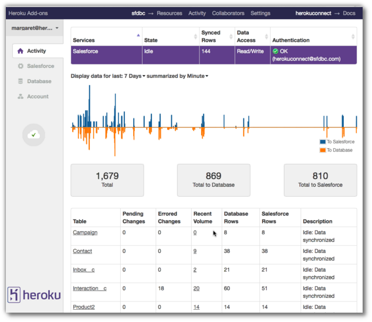

Heroku Overview for Developers
John Stevenson
jr0cket
Lets start with a demo
- Heroku Button - Node.js heroku sample app
- Heroku Button - Clojure Budget app with Luminus
- Heroku Button - Ruby Rails app
- Ruby app and Postgres Database
- Node.js simple site (command line)
Overview of Heroku
Platform as a Service (PaaS)
Highly scalable deployment platform
- developers to focus on their apps
- add-on services to help build your apps
- DevOps team as a service
Developer focused
Use Git to securely transfer code to Heroku
git push heroku master

{kind=link}
Flexible Language support

Ruby, Node.js, Python & Java
- community buildpacks for everything else
- fork / create your own buildpacks
Scalable platform
Scale your apps "instantly"

Who uses Heroku
Startups who need to find the right idea
- LevelUp Huricane proof payments
Enterprises that need to innovate
Getting Started
Create a free account
Install Heroku Toolbelt
toolbelt.heroku.com
Securely identify yourself with Heroku
heroku login
Creating your first app
Create your app
- using what ever language you like
Version your app with Git
git init git add . git commit -m "meaningful message"

Create an app on Heroku
Connects your local Git repository to Heroku Creates a unique URL for your app
heroku create heroku create unique-name heroku create --region eu|us

Heroku Dashboard in detail
Heroku Toolbelt in detail
Collaborating with Heroku
Developer worlflow with Heroku

Developer worlflow with Github and Heroku

Running your app
Procfile
Scaling your apps
web & other process types
Scaling a process
seperating out different processes
Example Node app with multiple process
Auto Scaling
- no replacement for measuring the performance of your code
Environment Variables
Working with Addon services
Postgres
Maintaining your app on Heroku
Logging
Longer term Logging
Performance metrics
Heroku Connect
Syncronise customer data with Salesforce
{kind=link}
Slide with background image
- bulletpoint
- dont go crazy
Sub-slide - srolls vertically from slide above
Some source code using hightlits.js
(def clojure-devs "love brackets")
Slied with code
git init
Slide with Colour - overriding the theme
I love red.
Hightliht text as a fragment of the slide
Fragments in Reveal.js
Press the "Down" key on the page or the down arrow to trigger fragments
- Create
- Fragment
- At Ease
Fragment captions
#+ATTR_REVEAL: :frag
* Create
* Fragment
* At Ease
Reveal.js Can Alert
Change slide style to wake up the sleepy audience.